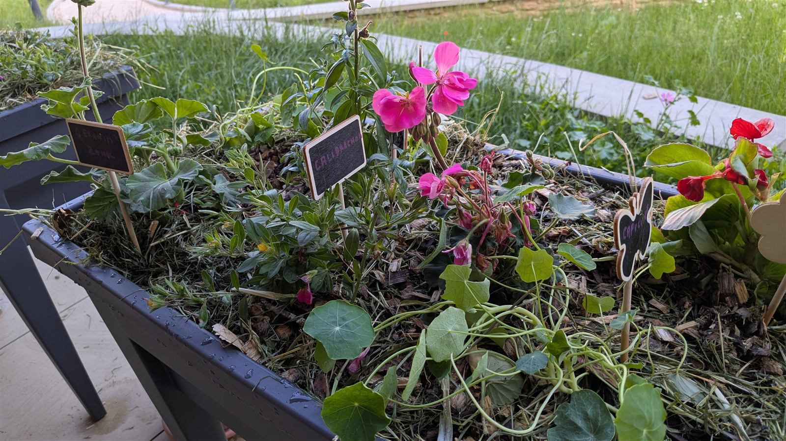

De la crèche à l'entreprise, des ateliers et des balades où l'on touche, où l'on observe, où l'on comprend le vivant. Dans votre structure ou dehors, à Mâcon, dans le Beaujolais et à Lyon.
De la terre, des plantes, des petites bêtes. Jamais de fiches plastifiées à réciter : On rencontre le vivant, on ne l'apprend pas par cœur.
On touche, on sent, on manipule. Chaque participant fait, à son rythme. C'est le sensoriel qui laisse la trace, pas le discours.
Seize ans de métier dans les espaces verts publics : les gestes viennent d'une pratique vécue, pas d'un classeur pédagogique.
Chacun assemble dans son pot les étages d'un sol vivant, et repart avec. De la crèche à l'entreprise, l'atelier qui fait toucher du doigt ce qui se passe sous nos pieds.
Découvrir l'atelierDes sorties sensorielles pour les tout-petits : toucher, sentir, observer, dans le calme et en sécurité.
Voir l'animationUn fil rouge multi-séances pour la classe : sol, plantes, petites bêtes, saisons. Co-construit avec l'enseignant.
Voir le programmeApprendre à lire un paysage : traces, sols, liens invisibles. Sur votre site, dans un parc ou sur un sentier.
Voir la balade
La mémoire du jardin qui remonte par les mains : un cycle multi-séances adapté aux résidences et EHPAD.
Voir les ateliersVotre public, votre lieu, votre envie, même floue.
Réponse sous 48 h, puis un échange pour cerner ce qui vous irait.
Un format adapté, un devis clair, sans engagement.
J'arrive avec tout le matériel, votre équipe profite du moment.
Dites-moi pour quel public et à quelle période. Je vous réponds sous 48 h, avec un format et un devis adaptés.
Demander un devis ou posez-moi simplement votre question, sans devis, sans engagement